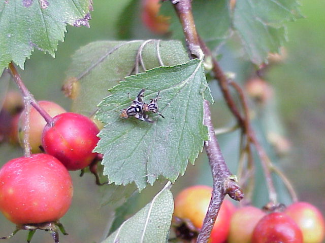

Jim Smith at MSU
Research

Rhagoletis
pomonella male and female on hawthorn (Crataegus mollis
L.)
Descriptions of Research
Projects
(email me
(jimsmith@msu.edu) for further details, if you are
interested)
Rhagoletis flies and their associated parasitoids
The research in my lab is broadly centered on insect evolution with a special emphasis on flies in the genus Rhagoletis (Diptera: Tephritidae). We are interested in all aspects of the evolution of Rhagoletis spp. (Diptera:Tephritidae), especially the biogeographic patterns and host relationships of natural species and populations worldwide.
1. Updating the Phylogeny of Rhagoletis: Relationships of the North American Species Groups
Dan Hulbert, a Ph. D. student in the lab, is generating mtDNA, CAD, 28S rDNA, and period sequences to update the phylogenetic relationships of the North American Rhagoletis taxa.
2. Natural history of Rhagoletis juniperina Marcovitch and other juniper-infesting Rhagoletis.
We are also interested in the natural history of juniper-infesting Rhagoletis species, which appear to be more widespread than has been appreciated.
My colleagues and I are interested to find out if there are genetic differences in cherry fruit fly (R. cingulata Loew) populations as a function of host use and/or orchard type. Initial studies analyzing adult flies taken from yellow sticky traps in orchards compared to native black cherry did not reveal any differences.
4. Examining co-evolutionary relationships between Rhagoletis species and their hymenopteran parasitoids.
Our lab is involved in collaborative projects with the labs of Dr. Andrew Forbes (Univ. Iowa) and Dr. Jeff Feder (Univ. Notre Dame) to explore speciation dynamics and co-evolutionary relationships resulting from interactions between flies in Rhagoletis species and their array of hymenopteran parasitoids, which infest Rhagoletis spp. in their egg, larval, and pupal stages.
Emerald Ash Borer
1. Genetic analysis (mtDNA, AFLP, and microsatellites) of Emerald ash borer (Agrilus planipennis Fairmaire) populations from Asia and North America.
My lab has been involved in the invasion genetics of the Emerald Ash Borer (EAB; Agrilus planipennis Fairmaire), an invasive buprestid beetle that threatens to destory ash trees throughout the Great Lakes region. In collaboration with USDA-FS scientists Leah Bauer, Bob Haack and Therese Poland, a graduate student in the lab, Alicia Bray, used molecular markers (mtDNA sequences, AFLP fingerprints, and microsatellites) to determine the geographic origin(s), presumably in Asia, of the EAB populations that are infesting Ash trees (Fraxinus spp.) in North America.
Biology Education
I am also passionate about evolution education and am involved in a number of biology education projects with colleagues at MSU and elsewhere. A major project at present, being carried out in collaboration with Dr. Peter J. T. White and Dr. Merle K. Heidemann, is to develop and pilot a set of integrative case-based materials for evolution education (see www.evo-ed.org). One goal of this project is to help people understand the molecular genetic basis of evolutionary processes. My colleagues and I are also interested in "tree-thinking" approaches to evolution education, and I have become involved more recently in major dissemination and assessments efforts surrounding classroom implementation of the evolution education software, Avida-ED.
1. Development of Integrative Case Studies to Enhance Evolution Education.
2. Teaching Molecular Evolution: Incorporating the "Molecular" into "Evolution" Education.
3. Using Inquiry and Tree-Thinking to "March Through the Animal Phyla.
4. Does Working With Phylogenetic Trees Help Students Understand Biodiversity and Evolution?
Selected Publications
please email me
(jimsmith@msu.edu) to request a reprint
Published
White PJT, Heidemann MK, Smith JJ. 2015. A cross-course investigation of integrative cases for evolution education. Journal of Microbiology and Biology Education 16: xxx - xxx. in press.
Frayer M, Hulbert D, Satar S, Smith JJ. 2015. Phenological attributes and phylogenetic relationships of Rhagoletis juniperina Marcovitch (Diptera: Tephritidae) in the Great Lakes region. The Great Lakes Entomologist 48: 67-78.
Smith JJ, Powell THQ, Teixeira L, Armstrong WO, McClowry RJ, Isaacs R, Hood GR, Feder JL, Gut L. 2014. Genetic structure of Cherry Fruit Fly (Rhagoletis cingulata) populations across managed, unmanaged, and natural habitats. Entomologia Experimentalis et Applicata, 150: 157 - 165. DOI: 10.1111/eea.12148.
Heidemann MK, White PJT, Smith JJ. 2014a. "Joel E. Greengiant learns about peas: from nucleotides to selection." Published Case Study and Teaching Notes, National Center for Case Study Teaching in Science, University at Buffalo, State University of New York.
Heidemann MK, White PJT, Smith JJ. 2014b. "The evolution of color vision in monkeys: from nucleotides to ecology." Published Case Study and Teaching Notes, National Center for Case Study Teaching in Science, University at Buffalo, State University of New York.
White PJT, Heidemann MK, Smith JJ. 2013a. A new integrative approach to evolution education. BioScience 63: 586 - 594. doi: 10.1525/bio.2013.63.7.11.
White PJT, Heidemann MK, Loh M, Smith JJ. 2013b. Integrative cases for teaching evolution. Evolution: Education and Outreach. 6:17. doi:10.1186/1936-6434-6-17.
Smith JJ, Cheruvelil KS, Auvenshine S. 2013. Assessment of Student Learning Associated with Tree-thinking in an Undergraduate Introductory Organismal Biology Course. CBE Life Sciences Education, 12: 1-11.
Luckie DL, Smith JJ, Cheruvelil KS, Fata-Hartley C, Murphy CA, Urquhart GR. 2013. The "Anti-Cookbook Laboratory": Converting "Canned" Introductory Biology Laboratories to Multi-week Independent Investigations. Tested Studies for Laboratory Teaching: Proceedings of the Association for Biology Laboratory Education, 34: 196-213.
Forbes AA, Satar S, Hamerlinck G, Nelson AE, Smith JJ. 2012. DNA barcodes and targeted sampling methods identify a new species and cryptic patterns of host specialization among North American Coptera (Hymenoptera: Diapriidae). Ann. Entomol. Soc. Am. 105: 608-612.
Johnson NA, Smith JJ, Pobiner B, Schrein C. 2012. Why Are Chimps Still Chimps? American Biology Teacher 74: 74-80.
Bray AM, Bauer LS, Poland TM, Haack RA, Cognato AI, Smith JJ. 2011. Genetic analysis of emerald ash borer (Agrilus planipennis Fairmaire) populations in Asia and North America. Biological Invasions 13: 2869-2887.
Smith JJ, Baum DA, Moore A. 2009. The need for molecular genetic perspectives in evolutionary education (and vice versa). Trends in Genetics, 25: 427-429.
Smith JJ, Cheruvelil KS. 2009. Using Inquiry and Tree-Thinking to "March Through the Animal Phyla". Evolution: Education and Outreach, 2: 429-444.
Forbes AA, Powell THQ, Stelinski LL, Smith JJ, Feder JL. 2009. Sympatric speciation cascades across trophic levels. Science 323: 776-779.
Gavrilovic V, Bush GL, Schwarz D, Crossno JE, Smith JJ. 2007. Rhagoletis zephyria (Diptera: Tephritidae) in the Great Lakes basin: A native insect on native hosts? Ann. Entomol. Soc. Am. 100(4): 474-482.
Smith JJ. 2006. [Review of] Alan Burdick, Out of Eden: An Odyssey of Ecological Invasion. Organization and Environment 19: 423-425.
Smith JJ, Jaycox MA, Smith M, Bush GL. 2005/6. Analysis of mitochondrial DNA and morphological characters in the subtribe Carpomyina (Diptera: Tephritidae). In: Biotaxonomy of Tephritoidea, Israel Journal of Entomology, 35-36: 317-340.
Feder JL, Berlocher SH, Roethele JB, Dambroski H, Smith JJ, Perry WL, Gavrilovic V, Filchak KE, Rull J, Aluja M. 2003. Allopatric genetic origins for sympatric host-plant shifts and race formation in Rhagoletis.Proceedings of the National Academy of Sciences of the United States of America 100: 10314-10319.
Smith JJ, Gavrilovic V, Smitley DR. 2001. Native Vaccinium spp. infested by Rhagoletis mendax (Blueberry maggot; Diptera: Tephritidae) in the Great Lakes region: a potential source of inoculum for infestation of cultivated blueberries. Journal of Economic Entomology, 94: 1378-1385.
Smith JJ, Bush GL. 1999. Phylogeny of Carpomyina, emphasizing relationships of the genus Rhagoletis. pp. 187-217 in: A. Norrbom & M. Aluja (eds.), Fruit flies (Diptera: Tephritidae): Phylogeny and Evolution of Behavior , CRC Press, Boca Raton, FL.
Bush GL, Smith JJ. 1998. The genetics and ecology of sympatric speciation: a case study. Researches on Population Ecology 40: 175-187.
Smith JJ, Bush GL. 1997. Phylogeny of the genus Rhagoletis (Diptera: Tephritidae) inferred from DNA sequences of mitochondrial cytochrome oxidase II. Molecular Phylogenetics and Evolution 7: 33-43.
last updated June 23, 2015